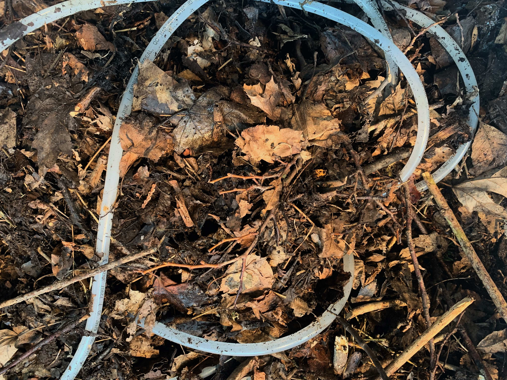

À PROPOS
Je travaille avec des processus qui déplacent, déroutent et dépassent mes intentions. Dans une approche presque
alchimique, je facilite l’émergence — et la subsistance — de systèmes vivants. Ceux-ci prennent la forme d’installations
éphémères, d’arrangements instables orientés vers la vitalité des matières, des êtres et des processus qui les animent
de l’intérieur. Ils évoluent lentement, au fil d’échanges continus avec leurs sites, parfois jusqu’à leur
propre décomposition.
Ma pratique cultive la patience et le soin, à rebours des logiques extractivistes. En décentrant le regard vers
des échelles autres-qu’humaines — bactériennes, géologiques, moléculaires — elle tente un réalignement écologique.
En ce sens, les matières que je mobilise ne me servent ni de métaphores ni de médiums assignés à une fonction signifiante.
Elles ne sont rien d’autre qu’elles-mêmes — surface d’un mystère que je cherche à ramener à l’avant-plan en interrogeant
les forces agissantes qui s’y dessinent et la profondeur de nos interdépendances. Je m’applique ainsi à raffiner
l’attention que nous portons au monde terrestre, dans les décombres de nos pratiques et de nos technologies d’absence.
ABOUT
My practice cultivates an ecological attentiveness. Tuning in to liminal forms of existence - bacteria, fungi,
electrical currents, waste materials, sonic turbulences, dust - I compose ephemeral systems oriented towards their
own materiality. My approach is exploratory and relational, mindful of the consequences of my gestures, as well as of
their entaglements with more-than-human collectives. By shifting attention to other scales and temporalities, I seek to
refine our presence in earthly ecologies, in the rubble of our practices and technologies of inattention.
My works transform in real time, through ongoing exchanges with their site. After dismantling, they leave few traces.
Some of their components will decompose. Others will be redistributed, or preserved for subsequent arrangements.
CONTACT
antoine.racine [at] yahoo.com